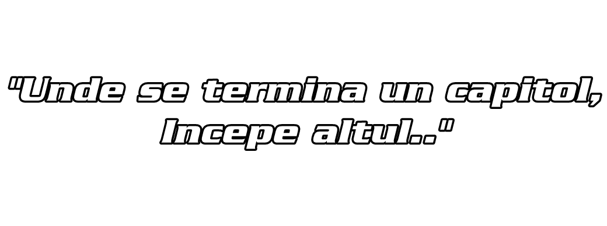
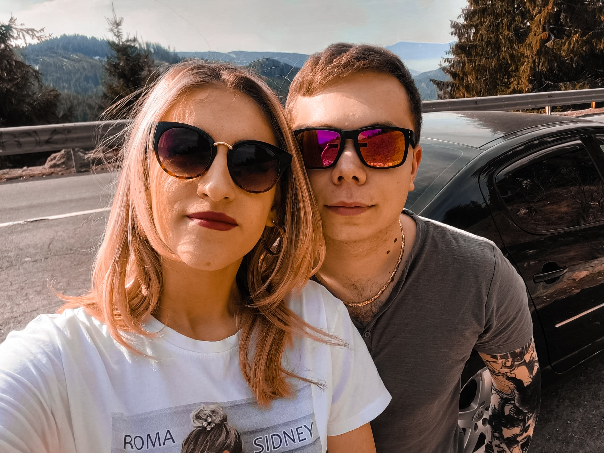

Părerea mea după 4 ani de liceu..
Mulțumesc..
Înainte de a începe, vreau să menționez faptul că sunt recunoscător pentru persoanele întâlnite în acești ani de liceu, pentru profesorii care mi-au oferit mai mult decât materia, ci mi-au povestit și din pildele lor de viață, pentru colectivul din care voi face parte până la bacalaureat. Liceul a însemnat, cu adevărat, cei mai frumoși ani din viața mea, însă acum trebuie să mă pregătesc să pun punct acestui capitol și să încep să îmi modelez din condei următorul.. Viața de student.
Aceasta este cea mai recentă poză pe care o am cu mine în momentul în care scriu atestatul.. Este începutul lunii aprilie, mă pregătesc să împlinesc vârsta frumoasă de 19 ani și cred că este ultimul lucru pe care îl voi scrie în acest atestat, așa că nu voi povesti nimic nou, nu voi încerca să îmi amintesc din aventurile din ultimii ani, ci vreau să îmi scriu părerea sinceră despre cum au decurs, despre cum am evoluat și despre cum îmi doresc să evoluez.
În primul rând, se poate observa o fată în dreapta mea, aceasta este prietena mea, alături de care am început clasa a XII-a. Ea este "însoțitoarea de zbor" din vară. Sunt recunoscător că nu voi termina liceul singur și că voi avea o persoană alături de mine cu care voi putea să mă bucur de absolvire, alături de care să pot spune că am reușit. Încerc să nu par dramatic, însă sper că ceea ce avem acuma să dureze până în punctul în care vom putea fi la casă noastră și ne vom spune că am reușit.
Vreau să le mulțumesc următoarelor persoane, deoarece datorită lor, am ajuns în punctul în care să fiu mândru de persoana care sunt:
Nu trebuie neglijată nici prezența părinților în anii de liceu, cărora le sunt recunoscător pentru că m-au susținut în tot ce am vrut să fac pe parcursul acestor ani, care mi-au oferit sprijinul necesar pentru a realiza toate lucrurile acestea. Am învățat cu adevărat și am înțeles proverbul "Dacă ai un bătrân prețuiește-l, iar dacă nu ai, să îți cumperi", deoarece datorită părinților am învățat să fiu mai înțelept, am învățat că nu este mereu bine să reacționez instinctiv și am ajuns în punctul în care să pot să spun că de fiecare dată când ies din casă și oriunde merg pot să îi fac mândri, să le dovedesc că ultimii 12 ani în care am învățat și-au pus amprenta asupra mea și m-au clădit într-un om bun care va face din ce în ce mai bine.
Liceul nu a fost ușor, au fost momente frumoase și mai puțin frumoase, au fost momente tensionate când dădeam teste neașteptate și pe care nu le știam, au fost zilele de online în care am avut parte de peripeții datorită libertății de a folosi calculatorul, însă per total, acești 4 ani au fost de neuitat. Am învățat lucruri noi, am reușit să fac lucruri la care nu mă așteptăm vreodată. Aș minți dacă aș spune că îmi pare bine că se termină, pentru că stau și mă gândesc că nu voi mai avea ocazia de a vorbi cu colegii, vom fi nevoiți să ne separăm la facultăți diferite și să ne începem viețile, însă sper din toată inima că voi reuși să mai păstrez legătura cu aceștia.
Încheiere
Din păcate, trebuie să închei această "scrisoare" care sper să rămână alături de mine mulți ani de acum încolo, pe care să o pot citi de fiecare dată când îmi doresc să îmi amintesc de vremurile frumoase ale liceului. Vreau să mulțumesc Laurianului pentru persoana în care m-a format, deoarece consider că dacă ar fi fost să aleg alt drum, nu aș fi ajuns unde sunt astăzi, iar omul care scrie aceste rânduri este exact cel pe care îmi doream să îl văd atunci când eram mic. Așa că până la urmă, am reușit să ajung ce îmi doream să fiu atunci când eram mic și anume sunt fericit.